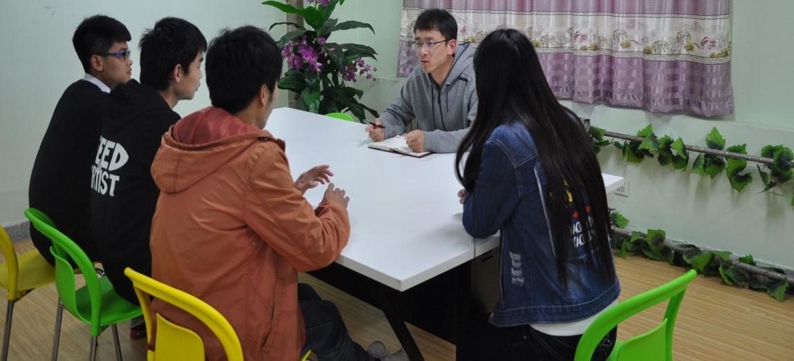
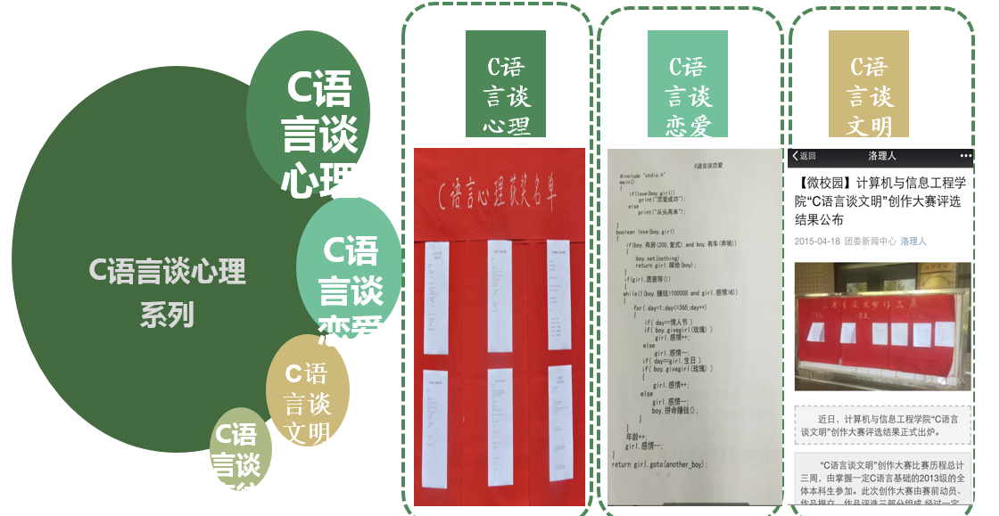
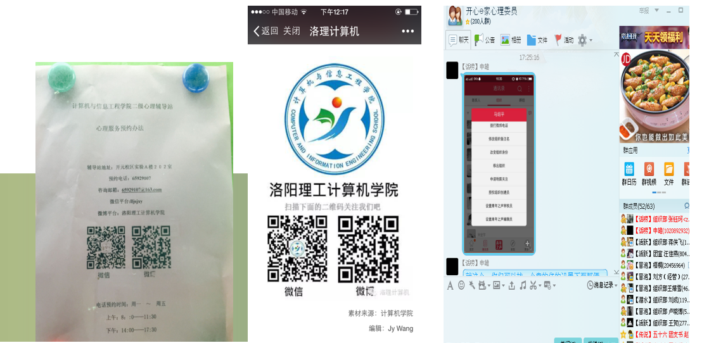
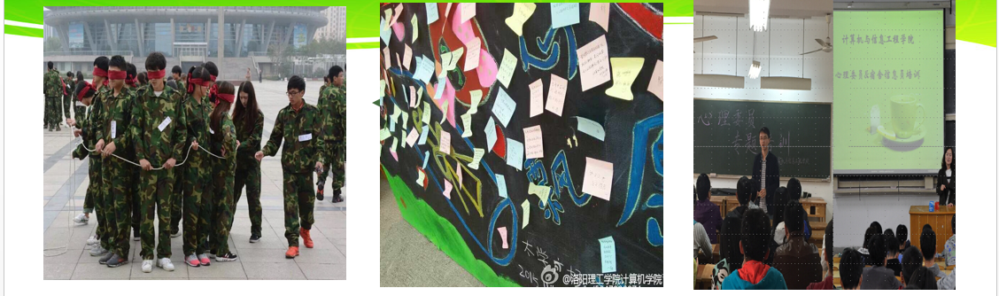

特色心理健康教育工作开展
1、心理沙龙
每周一次辅导员工作案例探讨，就学生在日常生活、学业学习、人际交往、情绪情感、生涯发展、就业创业、成长成才等方面存在的典型的辅导员工作案例和心理咨询与辅导案例，以心理沙龙的形式，进行广泛深入的探讨、分析、交流与总结，以此推动及时发现学生特殊行为和反常心理，及时疏导与干预，引导学生确立正确的学习目标，人际交往观念、成长发展理念。
2、C语言谈心理
以类“C语言”为载体，讲述心理感受、心理故事、心理案例等编程设计活动。通过运用类“C语言”中的选择、判断、循环等属性，面向对象等的编程思想，表述心理状态，表达心理诉求。通过“C语言谈心理”活动，引导学生积极关注心理健康。该活动依托计算机类专业特色，将“C语言”编程和心理健康教育有机的集合起来，成为学院心理健康教育品牌项目。既调动了学生专业知识的趣味性和灵活性，又增强了心理健康教育知识的学习与掌握，既达到了学习专业知识的目的，又达到学习心理知识的效果。此活动开展以来同学们关注度、参与度极高，效果良好。
3、线上心理咨询
为提高本学院学生的心理素质及调适能力，帮助学生顺利完成学业，根据学校要求，结合计算机类专业特色，通过开通洛理计算机微信平台（心灵空间）、建立开心e家QQ群、洛阳理工计算机学院微博平台，创建“心晴家园”心理咨询网站（http：// ）等线上心理咨询平台，进行快速、便捷有效的线上心理咨询与心理健康教育工作。师生之间的交流突破了时空限制，可以随时沟通，及时解决心理问题，凸显线上心理辅导作用，辅助学生心理健康工作的良好开展。
4、辅导员助心活动
辅导员老师深入班级、宿舍与学生交流沟通，在日常“进宿舍、进教室、进社团”工作中开展助心教育活动，让学生心事有人听、困惑有人解、困难有人帮。把握关键时间点，策划开展了3月“珍爱生命”、5月“5.25心理健康节”、6月“心灵相约”、9月“成长有家”、10月“心理健康教育月”等一系列针对性强、覆盖面广的心理健康教育活动，并形成了诸如“C语言谈心理”、“心愿漂流瓶”“心灵相约”等一批特色鲜明、影响力强、教育效果好的活动品牌，使心理健康教育延伸到每个角落，覆盖到每个学生。
